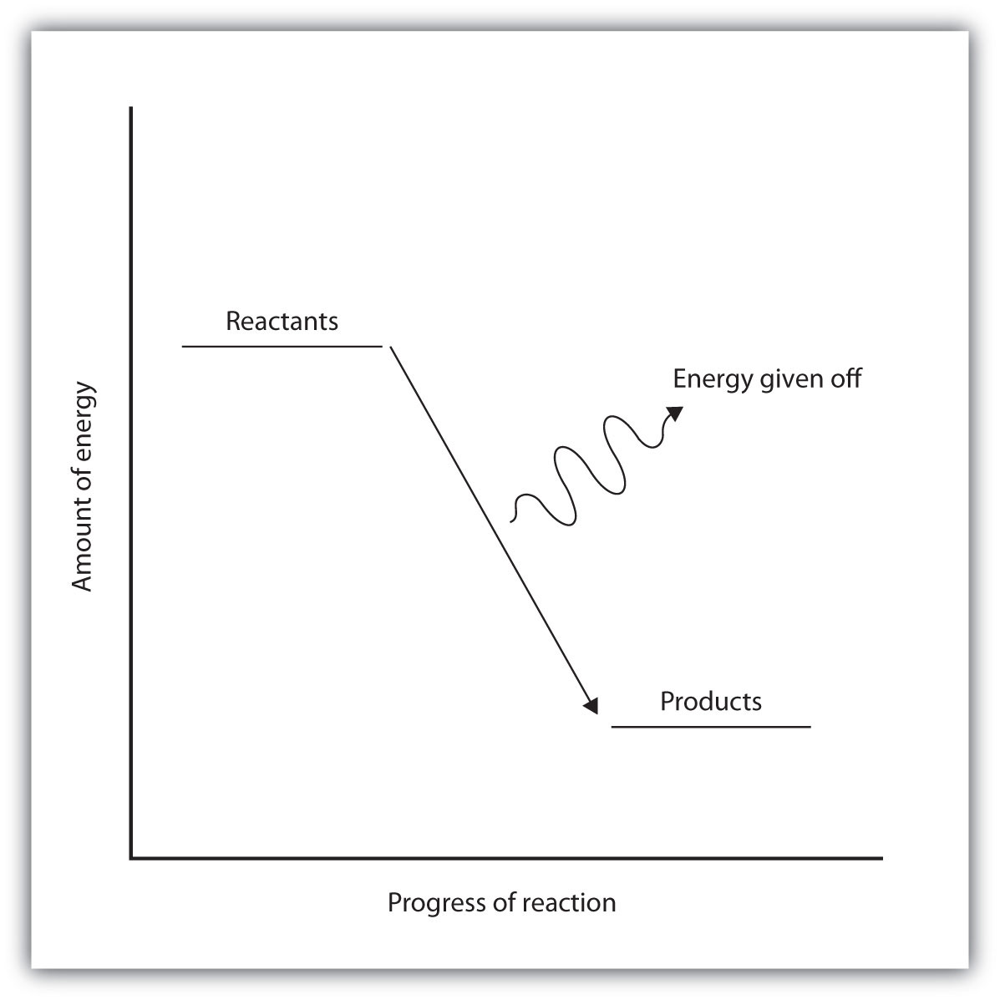
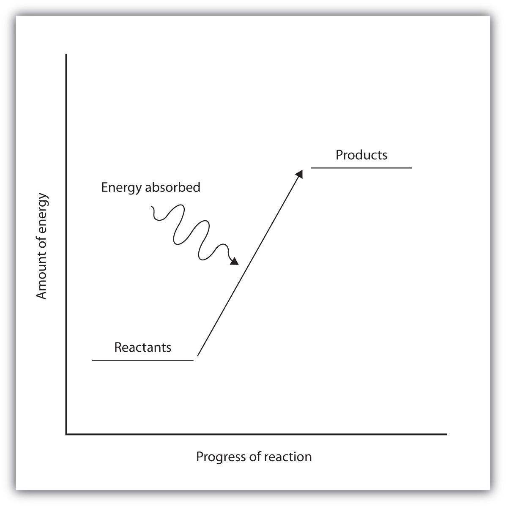

What happens when you take a basketball, place it halfway up a playground slide, and then let it go? The basketball rolls down the slide. What happens if you do it again? Does the basketball roll down the slide? It should.
If you were to perform this experiment over and over again, do you think the basketball would ever roll up the slide? Probably not. Why not? Well, for starters, in all of our experience, the basketball has always moved to a lower position when given the opportunity. The gravitational attraction of Earth exerts a force on the basketball, and given the chance, the basketball will move down. We say that the basketball is going to a lower gravitational potential energy. The basketball can move up the slide, but only if someone exerts some effort (that is, work) on the basketball. A general statement, based on countless observations over centuries of study, is that all objects tend to move spontaneously to a position of minimum energy unless acted on by some other force or object.
A similar statement can be made about atoms in compounds. Atoms bond together to form compounds because in doing so they attain lower energies than they possess as individual atoms. A quantity of energy, equal to the difference between the energies of the bonded atoms and the energies of the separated atoms, is released, usually as heat. That is, the bonded atoms have a lower energy than the individual atoms do. When atoms combine to make a compound, energy is always given off, and the compound has a lower overall energy. In making compounds, atoms act like a basketball on a playground slide; they move in the direction of decreasing energy.
We can reverse the process, just as with the basketball. If we put energy into a molecule, we can cause its bonds to break, separating a molecule into individual atoms. Bonds between certain specific elements usually have a characteristic energy, called the bond energyThe strength of interactions between atoms that make covalent bonds., that is needed to break the bond. The same amount of energy was liberated when the atoms made the chemical bond in the first place. The term bond energy is usually used to describe the strength of interactions between atoms that make covalent bonds. For atoms in ionic compounds attracted by opposite charges, the term lattice energyThe strength of interactions between atoms that make ionic bonds. is used. For now, we will deal with covalent bonds in molecules.
Although each molecule has its own characteristic bond energy, some generalizations are possible. For example, although the exact value of a C–H bond energy depends on the particular molecule, all C–H bonds have a bond energy of roughly the same value because they are all C–H bonds. It takes roughly 100 kcal of energy to break 1 mol of C–H bonds, so we speak of the bond energy of a C–H bond as being about 100 kcal/mol. A C–C bond has an approximate bond energy of 80 kcal/mol, while a C=C has a bond energy of about 145 kcal/mol. Table 7.5 "Approximate Bond Energies" lists the approximate bond energies of various covalent bonds.
Table 7.5 Approximate Bond Energies
| Bond | Bond Energy (kcal/mol) |
|---|---|
| C–H | 100 |
| C–O | 86 |
| C=O | 190 |
| C–N | 70 |
| C–C | 85 |
| C=C | 145 |
| C≡C | 200 |
| N–H | 93 |
| H–H | 105 |
When a chemical reaction occurs, the atoms in the reactants rearrange their chemical bonds to make products. The new arrangement of bonds does not have the same total energy as the bonds in the reactants. Therefore, when chemical reactions occur, there will always be an accompanying energy change.
In some reactions, the energy of the products is lower than the energy of the reactants. Thus, in the course of the reaction, the substances lose energy to the surrounding environment. Such reactions are exothermicA process that gives off energy. and can be represented by an energy-level diagram like the one in Figure 7.3 "Exothermic Reactions". In most cases, the energy is given off as heat (although a few reactions give off energy as light).
Figure 7.3 Exothermic Reactions
For an exothermic chemical reaction, energy is given off as reactants are converted to products.
In chemical reactions where the products have a higher energy than the reactants, the reactants must absorb energy from their environment to react. These reactions are endothermicA process that absorbs energy. and can be represented by an energy-level diagram like the one shown in Figure 7.4 "Endothermic Reactions".
Figure 7.4 Endothermic Reactions
For an endothermic chemical reaction, energy is absorbed as reactants are converted to products.
Exothermic and endothermic reactions can be thought of as having energy as either a product of the reaction or a reactant. Exothermic reactions give off energy, so energy is a product. Endothermic reactions require energy, so energy is a reactant.
Is each chemical reaction exothermic or endothermic?
Solution
Is each chemical reaction exothermic or endothermic?
H2(g) + F2(g) → 2HF (g) + 130 kcal
2C(s) + H2(g) + 5.3 kcal → C2H2(g)
What is the connection between energy and chemical bonds?
Why does energy change during the course of a chemical reaction?
Chemical bonds have a certain energy that is dependent on the elements in the bond and the number of bonds between the atoms.
Energy changes because bonds rearrange to make new bonds with different energies.
Using the data in Table 7.5 "Approximate Bond Energies", calculate the energy of one C–H bond (as opposed to 1 mol of C–H bonds).
Using the data in Table 7.5 "Approximate Bond Energies", calculate the energy of one C=C bond (as opposed to 1 mol of C=C bonds).
Is a bond-breaking process exothermic or endothermic?
Is a bond-making process exothermic or endothermic?
Is each chemical reaction exothermic or endothermic?
Is each chemical reaction exothermic or endothermic?
1.661 × 10−19 cal
endothermic